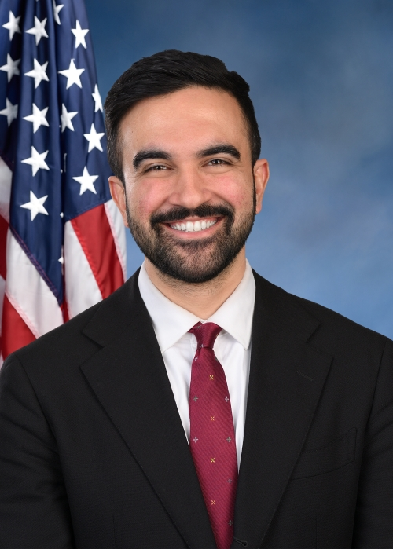
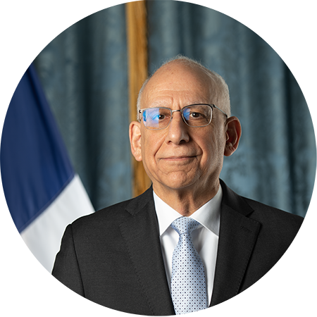
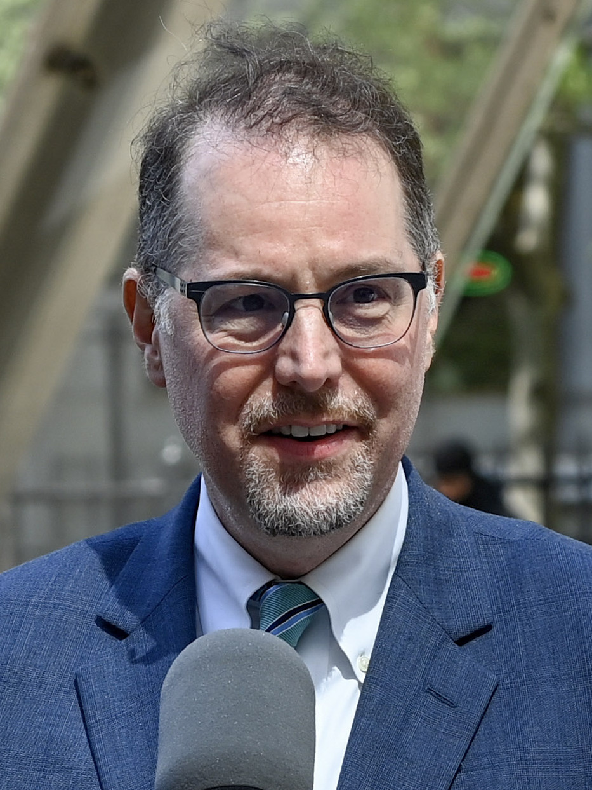
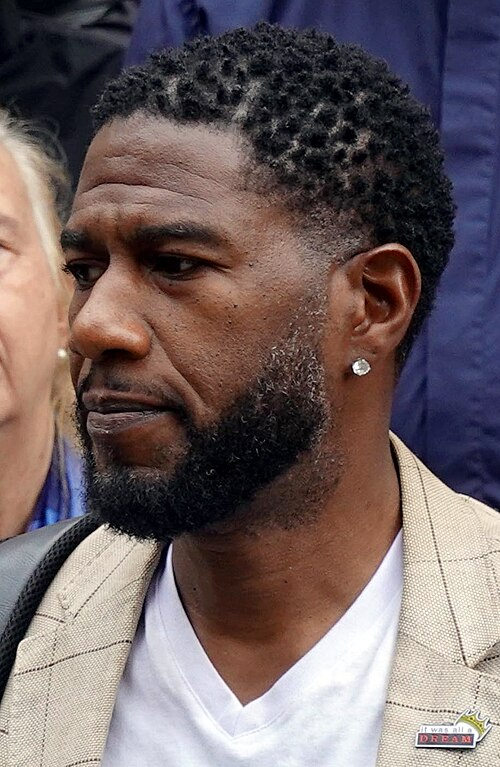
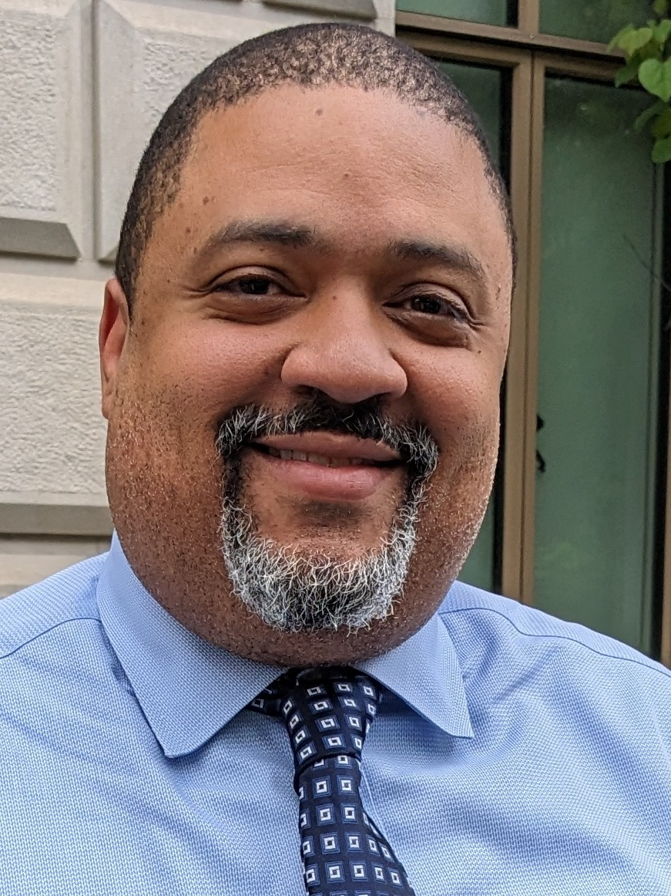

Born in Uganda and raised in New York City, he has fought for the working class in and outside the legislature: hunger striking alongside taxi drivers to achieve more than $450 million in transformative debt relief, winning over $100 million in the state budget for increased subway service and a successful fare-free bus pilot, and organizing New Yorkers to defeat a proposed dirty power plant. The cost of living is crushing working people but Zohran believes that government can lower costs and make life easier in our city — he’ll use every tool available to bring down the rent, create world class public transit, and make it easier to raise a family.
Current Local Government Officials

Mayor Elect
Zohran Mamdani

First Deputy Mayor
Dean Fuleihan
Dean Fuleihan is a highly-regarded veteran of New York government, previously serving as First Deputy Mayor and Budget Director under Mayor Bill de Blasio. Overseeing a budget of more than $100 billion, he guided the city through pandemic recovery and led major reforms in equitable budgeting and workforce development. Fuleihan brings extensive Albany experience, serving more than 30 years in various posts in the state Assembly, including 16 years as a policy adviser to Assembly Speaker Sheldon Silver. He was also the Chamber’s chief staff negotiator for the state’s $130 billion budget.

Comptroller
Mark Levine
Mark Levine has been at the forefront of advocating for more affordable, equitable and healthy communities for nearly 25 years. He’s a former bilingual math and science teacher in the South Bronx, and he founded the Neighborhood Trust Federal Credit Union, which today has made over $100 million of loans to local families and businesses in Northern Manhattan and the South Bronx. He served on the New York City Council for 8 years, including as Chair of the Committee on Parks, Chair of the Jewish Caucus, and Chair of the Committee on Health, where he brought his science-based and data driven approach to helping to lead the city out of the worst public health crisis in a century.

Public Advocate
Jumaane Williams
Jumaane D. Williams is the Public Advocate of the City of New York. Previously, he served on the NYC Council representing the 45th District. Jumaane is a first-generation Brooklynite of Grenadian heritage. He graduated from the public school system, overcoming the difficulties of Tourette's and ADHD to earn a Master's Degree from Brooklyn College. He began his career as a community organizer at the Greater Flatbush Beacon School and later served as the Executive Director of NYS Tenants & Neighbors. There, he fought for truly affordable, income-targeted housing across New York City and State.

Manhattan District Attorney
Alvin Bragg
Alvin Bragg is the 37th District Attorney elected in Manhattan. Alvin – a lifelong Manhattanite who served as a state and federal prosecutor – has spent more than two decades fighting to make our communities safer and our criminal justice system fairer. As District Attorney, Alvin restructured the Manhattan DA’s Office to focus more resources on prosecuting serious violent crimes. He made combatting gun violence through targeted enforcement and investments in prevention his top priority, resulting in a 40% drop in shootings his first two years in office.